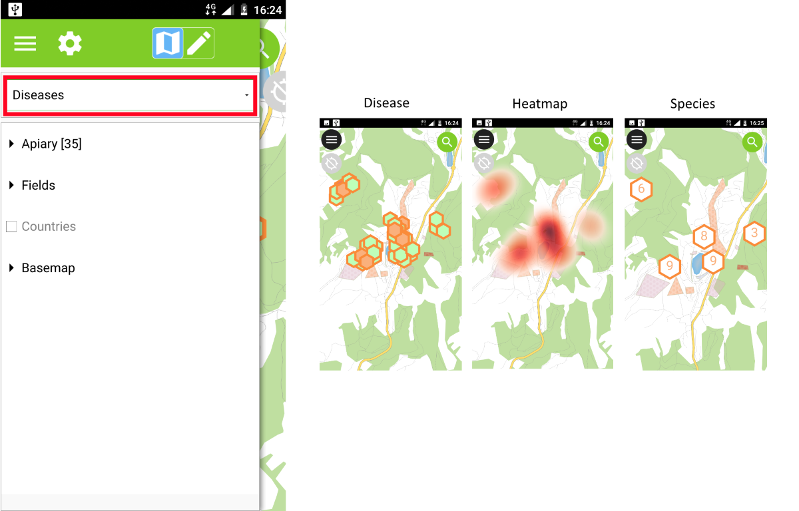

Guia do Utilizador do QField¶
Abrir um Projeto¶
Para abrir um projeto, toque em Botão Menu –> Botão de Opções –> Abrir projeto.
Selecione o projeto que deseja abrir navegando até ele ou use os atalhos Projetos recentes e Diretórios Favoritos.


Funcionalidades de identificação¶
Toque em uma feição no mapa para identificá-la. Se várias feições estiverem localizadas no ponto em que você tocou (porque existem várias feições realmente próximos um do outro ou porque várias camadas estão sobrepostas), todas serão listadas no menu que se abre à direita da tela.

Toque em uma das feições listadas para acessar seus atributos.
- Toque nas setas para rolar por todas as feições identificadas.
- Toque no botão central para centralizar o mapa na feição selecionada.
- Toque no botão de edição para editar os atributos da feição selecionada.
- Role pelos submenus para acessar todos os atributos.

Excepções para camadas identificadas¶
Geralmente, não é necessário poder consultar todas as camadas. Algumas camadas estão presentes apenas como mapa base e os seus atributos não são do seu interesse.
Pode gerir a lista de camadas no QGIS Desktop no e desactivar as camadas base.
Pesquisando¶
Toque no botão Pesquisar no canto superior direito para pesquisar nas camadas.
- Toque no nome no resultado para exibir o mapa no recurso (o recurso será destacado em amarelo).
- Toque no botão atributos para abrir seus atributos.

Mudando o tema do mapa¶
Se você definiu temas de mapa para o seu projeto no QGIS, poderá alternar entre eles usando o primeiro menu suspenso no Menu principal.
GPS¶
Um toque breve no botão GPS irá ligar o GPS e centrar à sua localização actual assim que a informação de posicionamento estiver disponível.
Um toque longo no botão GPS irá mostrar o menu de posicionamento.
Dentro do menu de posicionamento, você pode activar o ecrã de posicionamento, que mostrará as coordenadas actuais projectadas no SRC do projecto, juntamente com informações de precisão.

Nota
Se você vir informações lat / lon do WGS84 em vez de informações no SRC do seu projecto, provavelmente ainda não tem sinal.
Usando um Receptor externo GNSS¶
É possível fornecer um local simulado numa aplicação Android separado para o qfield. Existem várias opções para isso, uma delas é o Android NTRIP Client <https://play.google.com/store/apps/details?id=com.lefebure.ntripclient> _.
Para usar isto tem de activar as localizações simuladas no seu dispositivo Android.
Digitalização¶
Para começar a digitalizar novos recursos, ative o Modo de edição no menu principal (botão de lápis) e selecione a camada na qual deseja adicionar um novo recurso (a camada será destacada em cinza).

Pontos¶
Navegue pela mira no centro da tela até o local desejado e clique no botão + no canto inferior direito da tela para confirmar a criação de um nova feição de ponto.
Você pode usar o botão manter centralizado para forçar a mira a centralizar em sua localização, se você tiver ativado o GPS.

Linhas e Polígonos¶
Navegue pela mira no centro da tela até o início da linha ou polígono desejado e clique no botão Mais (+) no canto inferior direito da tela para adicionar o primeiro nó.
Prossiga com a adição de pontos para formar sua linha ou polígono clicando no botão Mais (+) sempre que desejar adicionar um novo nó.
Clique no botão Menos (-) para remover o último nó adicionado.
Clique no botão Fechar (X) para cancelar completamente a criação da feição.
Quando você adiciona pelo menos 2 nós para uma linha ou 3 nós para um polígono, um botão Salvar será exibido. Clique nele para finalizar seu esboço.

Formulário do atributo¶
Depois de digitalizar uma geometria, o formulário do atributo será exibido se não for suprimido e o usuário será solicitado a inserir os atributos para o novo recurso. O formulário exibido permite inserir valores de atributo para o novo recurso. As caixas de seleção à direita de cada atributo permitem lembrar cada atributo individualmente. Na próxima vez em que você adicionar um recurso à mesma camada, esses atributos já serão preenchidos.

Eliminar Funcionalidades¶
Só é possível apagar elementos no modo de digitalização.
Para eliminar uma função, identifique-a primeiro e toque no ícone do lixo.
Edite a geometria de uma feição existente¶
Completar.